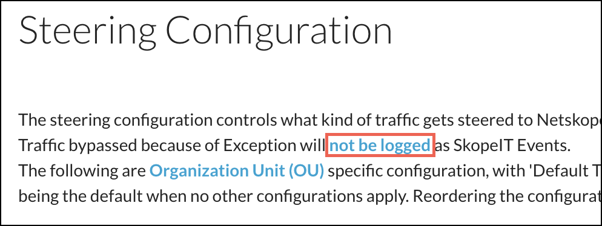
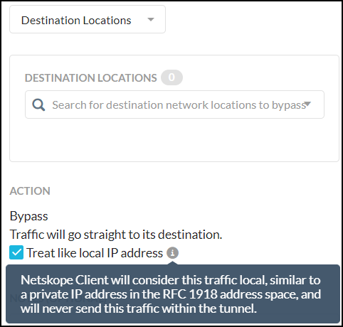

Exceptions
Exception configurations are no longer a single global list for the entire tenant, they are part of each Steering Configuration workflow. Exceptions are configured by first selecting a steering configuration, and then clicking Exceptions, which enables you to specify the traffic you want to bypass the Netskope Cloud.
Note
By default Exceptions are not logged in SkopeIT Events. If you prefer to see the traffic for Exceptions in SkopeIT, you need to enable this feature on the Steering Configuration page. Click the link not be logged at the top of the page:
|  |
Enable the Log radio button and then click Save.
 |
When using exceptions, consider these factors:
OU and User Group based exceptions cannot be applied when the Netskope Secure Web Gateway uses the cookie-surrogate feature to get user identity.
In the case of GRE and IPSEC deployments, the Netskope Secure Web Gateway gets the user identity with the help of the Netskope Client (if installed and enabled), or through SAML authentication. If by chance the traffic comes before the user identity is known to the Netskope Secure Web Gateway, OU and User Group based exceptions cannot be applied.
If the user identity is not known to the Netskope Secure Web Gateway, the default exception configuration will be applied.
Depending on the type of traffic you're steering, Cloud Apps Only or All Web Traffic, the Add Exceptions dropdown list options vary:
Cloud Apps Only: Select Applications, Certificate-Pinned Applications, Domains, Source Locations, Destination Locations, or Source Countries.
All Web Traffic: Select Certificate-Pinned Applications, Category, Domains, Source Locations, Destination Locations, or Source Countries.
Note
Domains, Categories, Source and Destination Locations, and Source Countries need to be configured in order to bypass them.
You can use wildcards to configure domain-based proxy bypass. For example, you trust Netskope and want to add/bypass all Netskope related domains because they are safe; you can add them to the bypass domain list using wildcards.
Note
The default exception list includes common domains (as wildcard entries) that are used for software updates. If a software/app update is interrupted ensure that the domain used for update is added to the exception list.
Pattern | Matches | Does not match |
|---|---|---|
"*.netskope.com" | "www.netskope.com" Note"*.netskope.com" does not include “netskope.com”. A separate entry must be created for "netskope.com". Wildcards plus a domain name is not supported for Cert-Pinned Applications tunnel domain names. Instead, use a specific domain name, like "google.com", "drive.google.com", and "mail.google.com", or "*". Do not use "*google.com", etc. | "netskope.com" |
"netskope.com" | "netskope.com" | "www.netskope.com" |
To configure Exceptions:
Select a steering configuration, and click Exceptions.
Select one of the Exception types from the Add Exceptions dropdown list.
The Add Exception panel opens. The Exception type chosen is shown in the top dropdown list.

Select an application, domain, etc. by entering text in the search field and selecting one of the options that appear in the dropdown list.
For Applications, search for and select the applications to bypass. Another method for selecting apps is to click View All, which provides two ways to select apps:
Show Available Applications Only: If selected, shows only the apps that are available for adding. The disabled apps are not shown. If not selected, all apps are shown.
All Steerable Applications: Selects all of the apps found by search.
After selecting applications, specify the platforms to bypass under Client Platform.
For Certificate-Pinned Applications, chose to bypass or block apps per platform, or enable Advanced Options to use other bypass options (shown below).
Certificate-Pinned applications are bypassed by default. To add a new Certificate-Pinned application, click + New Custom.

Enter a name, select a platform from the dropdown list, enter definitions (like native processes or domains), and then click Create.
With Certificate-Pinned Applications, enable Advanced Options to configure the action (Bypass or Block) and mode (Tunnel or Direct) for app traffic from all connected devices. Use the Domains fields to set domains for all app/plugin processes. Domain entries must be the exact domain name without a wildcard character, as defined in the Domain Format table. For example,
drive.google.comandmail.google.comor *, not*.google.com, etc.Bypass + Direct: Bypass the configured apps/domains directly to the device.
Bypass + Tunnel: The Netskope client will tunnel the traffic from apps/domains but the Netskope proxy will bypass it. This option is useful for domains associated with an SSO authentication service. because these services use the source IP of the Netskope cloud to determine if access to the cloud app is protected by Netskope.
Bypass Managed Devices + Direct: The client will bypass the app only if the device is managed, per the Device Classification policy, but will otherwise block it.
Bypass Managed Devices + Tunnel: The client will tunnel (to be bypassed by Netskope proxy) only if the device is managed, per the Device Classification policy, but will otherwise block it.
Block: The mode and other options are not applicable and the client blocks all the app traffic.

When finished, click Add.
Tip
The other exception types only support a generic bypass action, but the Destination Locations exception has a special bypass action for local traffic.
|  |
The Exception you just created appears on the Exception page. To show the exceptions on the page by type, use the Type dropdown list. Click +Filter to further fine-tune the exceptions on the page (like per domain).
Tip
Exceptions for certificate-pinned applications can be modified in bulk by selecting the boxes adjacent to each exception, and then choosing an option from the Set Action dropdown list.
 |